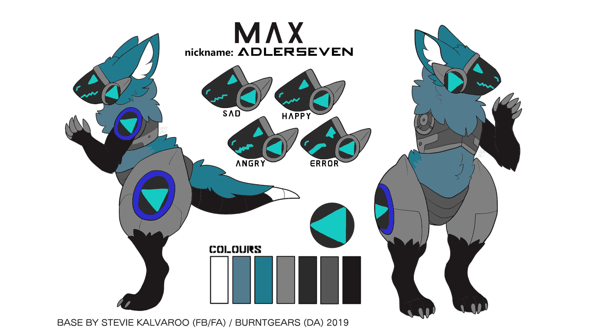
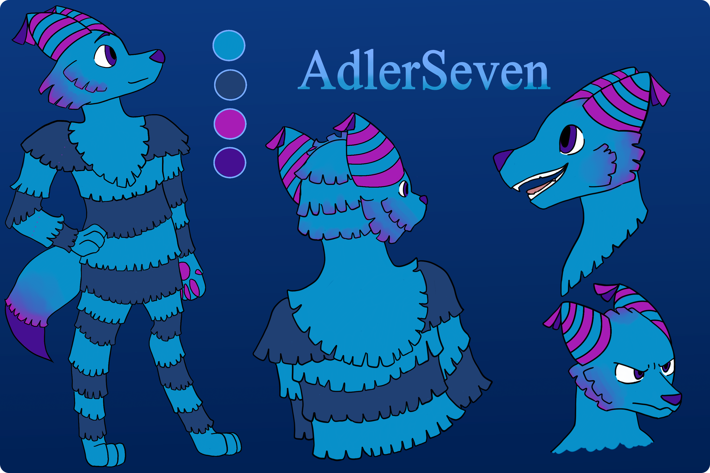

About me
That's me, that's Max
 In the early days as Protogen
Everything has start in 2017 but not as furry, as gamer. My first digital account that I have me was for Games,
the name comes from a old friend and it combinates two games "Adler" from the game "" and "Seven" comes from "", 2019-2020 i was a streamer
but succes wasn't, on february 2020 I have stopped do streamming, but it was not a problem, int the early days of 2020 I found the furry fandom and
it has insperated me in the march to join it. My first Sona but comes first in september 2020 and it was a protogen, but after a time I have changing it because
"it is boring when everything looking at the same", so I have make my own, it is a combination of a fox and a Pinata and after 3 design changes the
new character was born, the inspirations comes from Bash (the Pinata), someone other on Twitter, hardcore Techno and be a sweet specie.
In the same time I have learning my Girlfriend and sart my Education in Machine technology. And well we are now here!
Since march 2020 a furry
In the early days as Protogen
This Protogen was my first fursona created in november 2020, "coding, furry and do media stuff" was my start with really much success and
it has going a long time, but after a time I reached a limit (Protogens are with the design limited and I have to much changed me) on the end august I need
a new character with more costomisation and more indentical to me. Only 2 weeks later I found a artist that make my ideas to reality, in the first conzept it
was planning a blue wolf but this was to borring for me. My hobbys, the music that I hear and many more has bringing me on the idea to me a pināta fox combination,
on the end of september the first conzept was ready and in october the final one.
The Pināta/Fox
 In the early days as Protogen